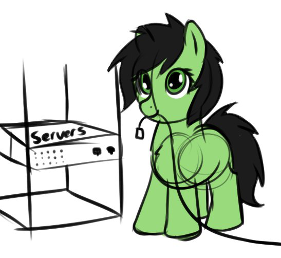

23.02.2024 20:40
Маленькие исправления дизайна
Слегка поменялся внешний вид сайта и прочие маленькие изменения
Новшества:
- Новостная панель
- Теперь можно просматривать изменения (как вы делаете сейчас)
По большому счёту это всё. Спасибо всем, кто поддерживает эту работу. Помимо общественной полезности, это еще и один из моих первых более-менее ответственных проектов с использованием git-а. Дальше больше!)
